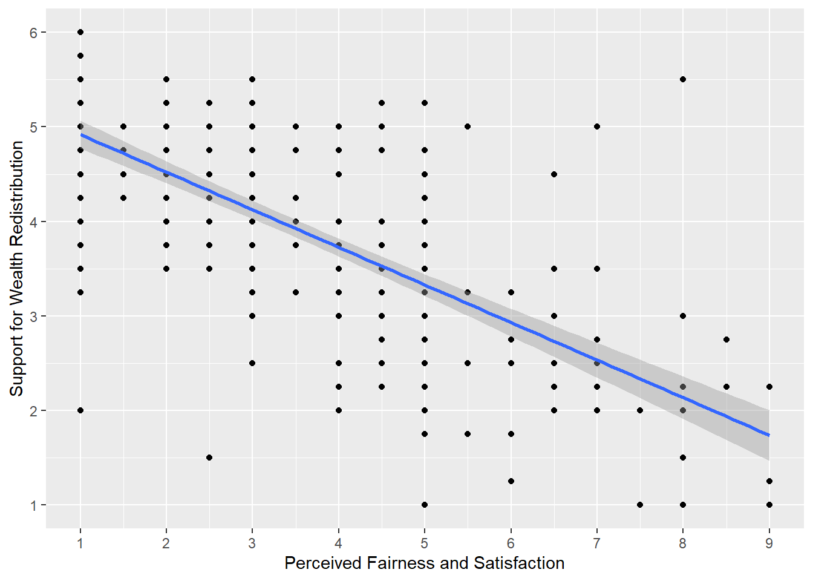

Rows: 305
Columns: 11
$ PS <dbl> 233, 157, 275, 111, 52, 11, 76, 90…
$ Household_Income <dbl> NA, 20.00, 100.00, 150.00, 500.00,…
$ Political_Preference <dbl> 5, 5, 5, 8, 5, 3, 4, 3, 2, 3, NA, …
$ age <dbl> 40, 59, 41, 59, 35, 34, 36, 39, 40…
$ gender <dbl> 2, 2, 2, 2, 1, 2, 2, 2, 2, 1, NA, …
$ Population_Inequality_Gini_Index <dbl> 38.78294, 37.21451, 20.75000, 35.3…
$ Population_Mean_Income <dbl> 29715, 123630, 60000, 59355, 15360…
$ Social_Circle_Inequality_Gini_Index <dbl> 28.056738, 24.323388, 14.442577, 2…
$ Social_Circle_Mean_Income <dbl> 21150, 65355, 107100, 86640, 56850…
$ fairness_satisfaction <dbl> 1.0, 3.5, 5.0, 7.0, 4.5, 2.5, 3.0,…
$ redistribution <dbl> 5.50, 3.25, 3.75, 2.75, 3.00, 3.75…8 Regression with one continuous predictor
So far in this book we have been building your skills and knowledge on data wrangling and you now have the basis for a lot of the work you will do in research. You may think that the tasks we ask you to do will get harder as this course progresses but that isn’t true. The hardest part of working with data is at the very beginning, trying to learn the new terminology, figuring out how to load in data and wrangle it into the format you need. And whilst it may feel like you have not yet covered a lot, it is really worth reflecting on just how far you’ve come in a short time..
We will talk a little bit about these two correlations in the work we do today. And we shall begin now!
Chapter Intended Learning Outcomes (ILOs)
By the end of this chapter, you will be able to:
- ILO1.
8.1 Chapter preparation
8.1.1 Introduction to the data set
For this chapter, we are using open data from Dawtry et al. (2015). The abstract of their article is:
The present studies provide evidence that social-sampling processes lead wealthier people to oppose redistribution policies. In samples of American Internet users, wealthier participants reported higher levels of wealth in their social circles (Studies 1a and 1b). This was associated, in turn, with estimates of higher mean wealth in the wider U.S. population, greater perceived fairness of the economic status quo, and opposition to redistribution policies. Furthermore, results from a large-scale, nationally representative New Zealand survey revealed that low levels of neighborhood-level socioeconomic deprivation?an objective index of wealth within participants’ social circles mediated the relation between income and satisfaction with the economic status quo (Study 2). These findings held controlling for relevant variables, including political orientation and perceived self-interest. Social-structural inequalities appear to combine with social-sampling processes to shape the different political attitudes of wealthier and poorer people.
In summary, the authors investigated why people with more money tend to oppose wealth redistribution policies to decrease inequality in society. We are using data from Study 1A where 305 people completed measures on household income, predicted population income, their predicted social circle income, in addition to measures on support for wealth redistribution and fairness and satisfaction with the current system.
They predicted people with higher incomes have social circles with higher incomes, so they are more satisfied with the current system of wealth redistribution and less interested in changing it. In essence, poorer people and richer people have different experiences of how rich and equal their country is. In this chapter, we will explore the relationship between a range of these variables.
8.1.2 Organising your files and project for the chapter
Before we can get started, you need to organise your files and project for the chapter, so your working directory is in order.
In your folder for research methods and the book
ResearchMethods1_2/Quant_Fundamentals, create a new folder calledChapter_08_regression_continuous. WithinChapter_07_dataviz, create two new folders calleddataandfigures.Create an R Project for
Chapter_08_regression_continuousas an existing directory for your chapter folder. This should now be your working directory.Create a new R Markdown document and give it a sensible title describing the chapter, such as
08 Correlations and Regression. Delete everything below line 10 so you have a blank file to work with and save the file in yourChapter_08_regression_continuousfolder.We are working with a new data set, so please save the following data file: Dawtry_2015.csv. Right click the link and select “save link as”, or clicking the link will save the files to your Downloads. Make sure that you save the file as “.csv”. Save or copy the file to your
data/folder withinChapter_08_regression_continuous.
You are now ready to start working on the chapter!
8.1.3 Activity 1 - Read and wrangle the data
As the first activity, try and test yourself by completing the following task list to practice your data wrangling skills. Create an object called dawtry_data to be consistent with the tasks below. If you want to focus on correlations and regression, then you can just type the code in the solution.
Try this
To wrangle the data, complete the following tasks:
Load the
tidyverse package.Read the data file
data/Dawtry_2015.csvto the object namedawtry_data.Reverse code two items:
redist2andredist4to create two new variablesredist2_Randredist4_RSummarise the data to calculate the mean
fairness_satisfactionscore, by taking the mean of two items:fairnessandsatisfaction.Summarise the data to calculate the mean
redistributionscore, by taking the mean of four items:redist1,redist2_R,redist3, andredist4_R.Create a new object called
dawtry_cleanby joiningdawtry_datawith your two new variablesfairness_satisfactionandredistribution.Decrease the number of columns in
dawtry_cleanby selectingPS, all the columns betweenHousehold_Incomeandredistribution, but removing the two reverse coded itemsredist2_Randredist4_R.
Your data should look like this to be ready to analyse:
Show me the solution
You should have the following in a code chunk:
# Load the tidyverse package below
library(tidyverse)
# Load the data file
# This should be the Dawtry_2015.csv file
dawtry_data <- read_csv("data/Dawtry_2015.csv")
# Reverse code redist2 and redist4
dawtry_data <- dawtry_data %>%
mutate(redist2_R = 7 - redist2,
redist4_R = 7 - redist4)
# calculate mean fairness and satisfaction score
fairness_satisfaction <- dawtry_data %>%
pivot_longer(cols = fairness:satisfaction,
names_to = "Items",
values_to = "Response") %>%
group_by(PS) %>%
summarise(fairness_satisfaction = mean(Response)) %>%
ungroup()
# calculate mean wealth redistribution score
redistribution <- dawtry_data %>%
pivot_longer(cols = c(redist1, redist2_R, redist3, redist4_R),
names_to = "Items",
values_to = "Response") %>%
group_by(PS) %>%
summarise(redistribution = mean(Response)) %>%
ungroup()
# join data and select columns for focus
dawtry_clean <- dawtry_data %>%
inner_join(fairness_satisfaction, by = "PS") %>%
inner_join(redistribution, by = "PS") %>%
select(PS, Household_Income:redistribution, -redist2_R, -redist4_R)8.1.4 Activity 2 - Explore the data
Try this
After the wrangling steps, try and explore dawtry_clean to see what variables you are working with. For example, opening the data object as a tab to scroll around, explore with glimpse(), or try plotting some of the individual variables using a histogram.
In dawtry_clean, we have the following variables:
| Variable | Type | Description |
|---|---|---|
| PS | double | Participant ID number. |
| Household_Income | double | Household income in US Dollars ($). |
| Political_Preference | double | Political attitudes: 1 = very liberal/very left-wing/strong Democrat to 7 = very conservative/very right-wing/strong Republican. |
| age | double | Age in years. |
| gender | double | 1 = “Male”, 2 = “Female. |
| Population_Inequality_Gini_Index | double | Measure of income inequality from 0 (perfect equality) to 1 (perfect inequality), here where participants estimated population in equality. |
| Population_Mean_Income | double | Participant estimate of the mean household income in the population ($). |
| Social_Circle_Inequality_Gini_Index | double | Measure of income inequality from 0 (perfect equality) to 1 (perfect inequality), here where participants estimated inequality in their social circle. |
| Social_Circle_Mean_Income | double | Participant estimate of the mean household income in their social circle ($). |
| fairness_satisfaction | double | Perceived fairness and satisfaction about the current system of wealth redistribution: Mean of two items (1 extremely fair – 9 extremely unfair) |
| redistribution | double | Attitudes on wealth distribution: Mean of four items (1 strongly disagree – 6 strongly agree). |
We will use this data set to demonstrate correlations and regression when you have one continuous predictor.
8.2 Correlation
Before we cover regression as a more flexible framework for inferential statistics, we think it is useful to start with correlation to get a feel for how we can capture the relationship between two variables. As a reminder from the materials, correlations are standardised to range from -1 (a perfect negative correlation) to 1 (a perfect positive correlation). A value of 0 would mean there is no correlation between your variables.
8.2.1 Activity 3 - Visualise the relationship
To explore the relationship between two variables, it is useful to create a scatterplot early for yourself, then provide a more professional looking version to help communicate your results.
Try this
Using your data visualisation skills from Chapter 7, recreate the scatterplot below using the variables fairness_satisfaction and redistribution from dawtry_clean.

Looking at the graph, we can describe the relationship as .
Show me the solution
The scatterplot shows a negative correlation between the two variables. As attitudes on wealth redistribution increase to be more positive, perceived fairness and satisfaction tends to decrease. This makes sense as people who are more dissatisfied with the current system think there should be more wealth redistribution stategies.
You should have the following in a code chunk:
8.2.2 Activity 4 - Calculate the correlation coefficient
Visualising the relationship between two variables is great for our understanding, but it does not tell us anything about the inferential statistics for what we can learn from our sample in hypothesis testing and measures of effect size.
A correlation is a specific application of the general linear model. We want to capture the covariation between two variables. They are not the only methods, but the two most common versions of a correlation are:
Pearson’s product-moment correlation (often shortened to the Pearson correlation) and symbolised by r
Spearman’s rank correlation coefficient (often shortened to the Spearman correlation) and symbolised by \(r_s\) or sometimes the Greek letter rho \(\rho\)
There is a function built into R (cor.test()) to calculate the correlation between two variables, but we tend to use the correlation() function from the correlation() function requires:
The name of the data set you are using
The name of the first variable you want to select for the correlation
The name of the second variable you want to select for the correlation
The type of correlation you want to run: e.g.
pearson,spearman
For our dawtry_clean data, we would run the following code for a two-tailed Pearson correlation:
| Parameter1 | Parameter2 | r | CI | CI_low | CI_high | t | df_error | p | Method | n_Obs |
|---|---|---|---|---|---|---|---|---|---|---|
| fairness_satisfaction | redistribution | -0.70034 | 0.95 | -0.7533907 | -0.6382316 | -17.07843 | 303 | < .001 | Pearson correlation | 305 |
Your output will look a little different due to how our book renders tables, but you should get the same information. For the three key concepts of inferential statistics, we get
Hypothesis testing: p < .001, suggesting we can reject the null hypothesis assuming \(\alpha\) = .05.
Effect size: r = -.70, suggesting a strong negative correlation.
Confidence interval: [-0.75, -0.64], showing the precision around the effect size estimate.
To summarise, there was a strong, negative, statistically significant relationship between attitudes on wealth redistribution and perceived fairness and satisfaction, r (303) = -0.70, p < .001, 95% CI = [-0.75, -0.64].
If we had reason to use a Spearman correlation instead, all we need to do is change the method argument.
| Parameter1 | Parameter2 | rho | CI | CI_low | CI_high | S | p | Method | n_Obs |
|---|---|---|---|---|---|---|---|---|---|
| fairness_satisfaction | redistribution | -0.6806667 | 0.95 | -0.738182 | -0.6133274 | 7947402 | < .001 | Spearman correlation | 305 |
Try this
Great work following along so far, but now it is time to test your understanding on a new set of variables. This time, use the variables age and redistribution from dawtry_clean. We can ask the question “What is the relationship between age and attitudes on wealth redistribution?”.
Create a scatterplot to visualise the relationship between
ageandredistributionfromdawtry_clean.-
Apply the Pearson correlation to get your inferential statistics and answer the following questions:
Hypothesis testing: Assuming \(\alpha\) = .05, the relationship between age and wealth redistribution is .
Effect size: Rounded to 2 decimals, the value for Pearson’s correlation coefficient is .
Confidence interval: Rounded to 2 decimals, the lower bound is and the upper bound is .
Show me the solution
The scatterplot shows very little correlation between the two variables. The regression line is almost flat and there does not appear to be a clear pattern to the data points.
dawtry_clean %>%
ggplot(aes(x = age, y = redistribution)) +
geom_point() +
geom_smooth(method = "lm") +
scale_y_continuous(name = "Attitudes on Wealth Distribution",
breaks = c(1:6))For our inferential statistics, the relationship is not statistically significant and the Pearson correlation coefficient is very weak, r (302) = -0.03, p = .625, 95% CI = [-0.14, 0.08].
8.3 Simple linear regression
8.3.1 Descriptive statistics
8.3.2 Modelling
8.3.3 Effect sizes and confidence intervals
8.3.4 Centering predictors
8.3.5 Visualising model estimates
8.4 Checking assumptions
8.5 Reporting your results
8.6 Test Yourself
To end the chapter, we have some knowledge check questions to test your understanding of the concepts we covered in the chapter. We then have some error mode tasks to see if you can find the solution to some common errors in the concepts we covered in this chapter.
8.6.1 Knowledge check
Look at this code and answer the following questions:
- What would this analysis show?
- What type of correlation analysis is it?
Now try running the code and then answering the following questions.
To three decimal places, what is the r-value of the correlation between IQ and the time spent reading at Home?
longmcq(sample(c(answer = rv, tv, civ, pv)))To three decimal places, what is the p-value of the correlation between IQ and the time spent reading at Home?
longmcq(sample(c(answer = pv, tv, civ, rv)))What is the degrees of freedom of the correlation between IQ and the time spent reading at Home?
longmcq(sample(c(answer = dfv, tv, civ, nv)))
This analysis is a two-tailed pearson correlation looking at the relationship between IQ and the amount of time spent reading at home. You can tell this from the two variables in the code being IQ and Home, and the code stating pearson, and two-sided (another name for two-tailed). If you run the analysis you will find that the result would be r(23) = .202, p = .334.
8.6.2 Error mode
The following questions are designed to introduce you to making and fixing errors. For this topic, we focus on the new types of data visualisation. Remember to keep a note of what kind of error messages you receive and how you fixed them, so you have a bank of solutions when you tackle errors independently.
Create and save a new R Markdown file for these activities. Delete the example code, so your file is blank from line 10. Create a new code chunk to load
8.7 Words from this Chapter
Below you will find a list of words that were used in this chapter that might be new to you in case it helps to have somewhere to refer back to what they mean. The links in this table take you to the entry for the words in the PsyTeachR Glossary. Note that the Glossary is written by numerous members of the team and as such may use slightly different terminology from that shown in the chapter.
| term | definition |
|---|---|
| pearson | A standardised measure of the linear relationship between two variables that makes stringent assumptions about the population. |
| spearman | A standardised measure of the relationship between two variables that assumes a monotonic - but not necessarily a linear - relationship and makes less stringent assumptions about the population. |
8.8 End of chapter
That is end of this chapter. Be sure to look again at anything you were unsure about and make some notes to help develop your own knowledge and skills. It would be good to write yourself some questions about what you are unsure of and see if you can answer them later or speak to someone about them. Good work today!
Excellent work today! You can now add running, interpreting and writing up correlations to the list of knowledge and skills in your research methods toolbox. Remember that actually a lot of the work is in the preparation of the data and really running the correlation is just one more function. It might be worthwhile repeating the first few activities with two other variables to test your understanding. If you have any questions, please post them on Teams.